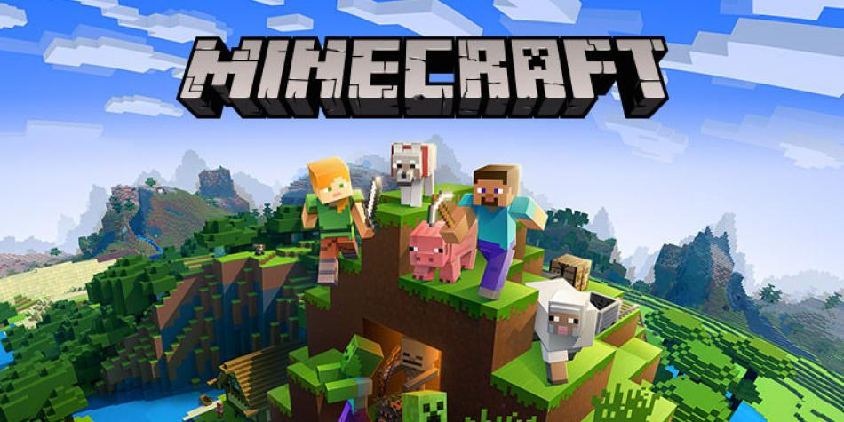

Minecraft

Minecraft es un juego de mundo abierto, y no tiene un fin claramente definido. Esto permite una gran libertad en cuanto a la elección de su forma de jugar. A pesar de ello, el juego posee un sistema que otorga logros por completar ciertas acciones.